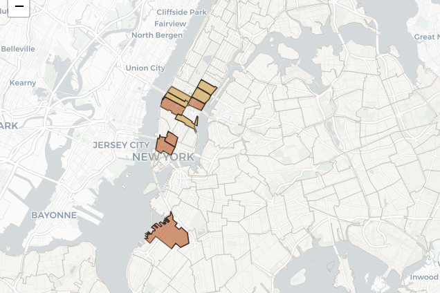

GEOSPATIAL ANALYST
Geoinformatics graduate student building geospatial software for New York City, most recently a computer vision pipeline for NYC DOT. Four seasons of conservation fieldwork behind the screen.

SELECTED WORK / PROJECTS

2,500 Acres in the Adirondacks
A spatial decision-support system that identifies which private parcels New York should acquire to satisfy a 2025 constitutional amendment, ranking parcels (and growing contiguous clusters) under different stakeholder priorities.
Explore the interactive map >>
NYC Vulnerable Road User Crash Analysis
Cross-referencing bike-lane infrastructure gaps, 311 complaints, and ZIP-code demographic risk on one map — then validating the resulting recommendations against NYC DOT's own Vision Zero data before trusting them.
Explore the interactive map >>ALL ABOUT ME
GIS analyst with a background in Environmental Conservation and Computer Science. Currently pursuing an M.S. in Geoinformatics at CUNY Hunter College, with a B.Sc. in Computer Science from Bishop's University.
Most recently I interned with the New York City Department of Transportation, where I built a computer vision pipeline that automatically flags damaged and vandalized street name signs from imagery. It replaces a manual inspection process that previously required sending people out to look at signs one at a time. The interesting part was not the model itself but everything around it: getting the imagery and the city's sign inventory to talk to each other, noticing that the training data underrepresented certain kinds of damage and going out to find more, and deciding against a more expensive LiDAR approach so the thing could actually ship.
Before that, my work sat closer to the ground. I've applied ArcGIS Field Maps to map aquatic invasive species spread on Lake Champlain with the Vermont Department of Environmental Conservation, conducted site assessments for watershed restoration at Mesa Verde National Park, and spent four seasons on trail and conservation crews across Vermont, Colorado, and Florida.
I'm comfortable moving between the field, where the data originates, and the desk, where it gets modeled, analyzed, and mapped for decision makers. Four seasons of trail and watershed work taught me to read a landscape on foot before I ever tried to read one in ArcGIS, and gave me a healthy respect for what good site data actually costs to collect.


GET IN TOUCH TODAY!
Email: karim.nabahi50@login.cuny.edu
LinkedIn: https://www.linkedin.com/in/karimnabahi/